pacman::p_load(sf, tidyverse, tmap, spdep)Take-home Exercise 1
Overview
Water is an important resource to human beings. Providing clean and accessible water is crucial for human health. However, over 40% of population worldwide do not have access to clean water. The lack of clean water not only poses a threat to human health, but also threatens food security as 70% of world’s clean water is used in agriculture. This problem is especially severe in Africa continent due to the difficulty in providing clean water to the rural community.
To solve the above issue, a global Water Point Data Exchange (WPdx) project has been initiated which aims at collecting water point related data from rural areas and share it via WPdx Data Repository.
Objectives
Geospatial analytics plays an important role in addressing social issues. In this study, appropriate global and local measures of spatial association techniques are used to identify the spatial patterns of Not Functional water points. Nigeria is used as the study country
Introduction
Libraries
sf is use for importing and handling geospatial data in R,
tidyverse is mainly use for wrangling attribute data in R,
spdep will be used to compute spatial weights, global and local spatial autocorrelation statistics, and
tmap will be used to prepare cartographic quality chropleth map.
Getting Started
Importing Geospatial Data
read_rds is used to access the data.
nga_wp <- read_rds("data/nga_wp.rds")nigeria <- nga_wpwp_functional <- qtm(nga_wp, "wpt functional")
wp_nonfunctional <- qtm(nga_wp, "wpt non-functional")Importing water point geospatial data
First, we are going to import the water point geospatial data (i.e. geo_export) by using the code chunk below.
wp <- st_read(dsn = "data",
layer = "geo_export",
crs = 4326) %>%
filter(clean_coun == "Nigeria")Next, write_rds() of readr package is used to save the extracted sf data table (i.e. wp) into an output file in rds data format. The output file is called wp_nga.rds and it is saved in geodata sub-folder.
write_rds(wp, "data/wp_nga.rds")Importing Nigeria LGA boundary data
Now, we are going to import the LGA boundary data into R environment by using the code chunk below.
nga <- st_read(dsn = "data",layer = "nga_admbnda_adm2_osgof_20190417",crs = 4326)Data Wrangling
Recoding NA values into string
In the code chunk below, replace_na() is used to recode all the NA values in status_cle field into Unknown.
wp_nga <- write_rds(wp, "data/wp_nga.rds")wp_nga <- read_rds("data/wp_nga.rds") %>%
mutate(status_cle =
replace_na(status_cle, "Unknown"))EDA
In the code chunk below. ‘filter()’ of dplyr is used to select functional points.
freq(data=wp_nga,
input = 'status_cle')Extracting Water Point Data
In this section, we will extract the water point records by using classes in status_cle field.
Extracting funtional water point
In the code chunk below, filter() of dplyr is used to select functional water points.
wpt_functional <- wp_nga %>%
filter(status_cle %in%
c("Functional",
"Functional but not in use",
"Functional but needs repair"))freq(data=wpt_functional,
input = 'status_cle')Extracting non-funtional water point
In the code chunk below, filter() of dplyr is used to select non-functional water points.
wpt_nonfunctional <- wp_nga %>%
filter(status_cle %in%
c("Abandoned/Decommissioned",
"Abandoned",
"Non-Functional",
"Non functional due to dry season",
"Non functional due to dry season"))freq(data=wpt_nonfunctional,
input = 'status_cle')Extracting water point with Unknown class
In the code chunk below, filter() of dplyr is used to select water points with unknown status.
wpt_unknown <- wp_nga %>%
filter(status_cle == "Unknown")Performing Point-in-Polygon Count
nga_wp <- nga %>%
mutate(`total wpt` = lengths(
st_intersects(nga, wp_nga))) %>%
mutate(`wpt functional` = lengths(
st_intersects(nga, wpt_functional))) %>%
mutate(`wpt non-functional` = lengths(
st_intersects(nga, wpt_nonfunctional))) %>%
mutate(`wpt unknown` = lengths(
st_intersects(nga, wpt_unknown)))Saving the Analytical Data Table
nga_wp <- nga_wp %>%
mutate(pct_functional = `wpt functional`/`total wpt`) %>%
mutate(`pct_non-functional` = `wpt non-functional`/`total wpt`) %>%
select(3:4, 9:10, 18:23)Things to learn from the code chunk above:
mutate()of dplyr package is used to derive two fields namely pct_functional and pct_non-functional.to keep the file size small,
select()of dplyr is used to retain only field 3,4,9,10, 18,19,20,21,22,and 23.
Now, you have the tidy sf data table subsequent analysis. We will save the sf data table into rds format.
write_rds(nga_wp, "data/nga_wp.rds")Visualising the spatial distribution of water point
nga_wp <- read_rds("data/nga_wp.rds")
total <- qtm(nga_wp, "total wpt")
wp_functional <- qtm(nga_wp, "wpt functional")
wp_nonfunctional <- qtm(nga_wp, "wpt non-functional")
unknown <- qtm(nga_wp, "wpt unknown")
tmap_arrange(total, wp_functional, wp_nonfunctional, unknown, asp=1, ncol=2)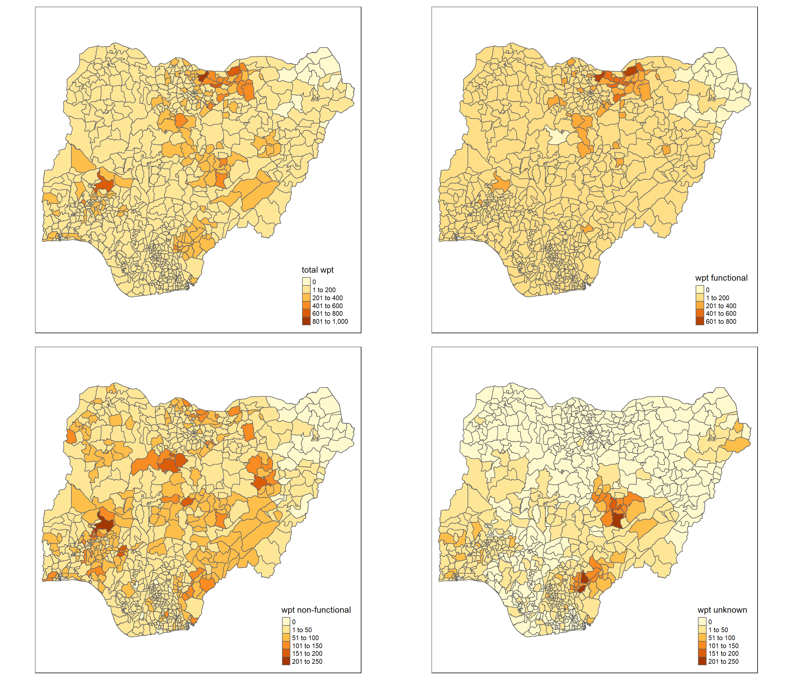
Assigning EPSG code to a simple feature data frame
st_crs(nga_wp)Coordinate Reference System:
User input: EPSG:4326
wkt:
GEOGCRS["WGS 84",
DATUM["World Geodetic System 1984",
ELLIPSOID["WGS 84",6378137,298.257223563,
LENGTHUNIT["metre",1]]],
PRIMEM["Greenwich",0,
ANGLEUNIT["degree",0.0174532925199433]],
CS[ellipsoidal,2],
AXIS["geodetic latitude (Lat)",north,
ORDER[1],
ANGLEUNIT["degree",0.0174532925199433]],
AXIS["geodetic longitude (Lon)",east,
ORDER[2],
ANGLEUNIT["degree",0.0174532925199433]],
USAGE[
SCOPE["Horizontal component of 3D system."],
AREA["World."],
BBOX[-90,-180,90,180]],
ID["EPSG",4326]]Projected Coordinate System should be changed to one of following EPSG: 26391, 26392, and 26303. The code chunk below is used to change EPSG to 26391.
nga_wp26391 <- st_set_crs(nga_wp, 26391)nga_wp<- st_transform(nga_wp, 26391)
st_crs(nga_wp)Coordinate Reference System:
User input: EPSG:26391
wkt:
PROJCRS["Minna / Nigeria West Belt",
BASEGEOGCRS["Minna",
DATUM["Minna",
ELLIPSOID["Clarke 1880 (RGS)",6378249.145,293.465,
LENGTHUNIT["metre",1]]],
PRIMEM["Greenwich",0,
ANGLEUNIT["degree",0.0174532925199433]],
ID["EPSG",4263]],
CONVERSION["Nigeria West Belt",
METHOD["Transverse Mercator",
ID["EPSG",9807]],
PARAMETER["Latitude of natural origin",4,
ANGLEUNIT["degree",0.0174532925199433],
ID["EPSG",8801]],
PARAMETER["Longitude of natural origin",4.5,
ANGLEUNIT["degree",0.0174532925199433],
ID["EPSG",8802]],
PARAMETER["Scale factor at natural origin",0.99975,
SCALEUNIT["unity",1],
ID["EPSG",8805]],
PARAMETER["False easting",230738.26,
LENGTHUNIT["metre",1],
ID["EPSG",8806]],
PARAMETER["False northing",0,
LENGTHUNIT["metre",1],
ID["EPSG",8807]]],
CS[Cartesian,2],
AXIS["(E)",east,
ORDER[1],
LENGTHUNIT["metre",1]],
AXIS["(N)",north,
ORDER[2],
LENGTHUNIT["metre",1]],
USAGE[
SCOPE["Engineering survey, topographic mapping."],
AREA["Nigeria - onshore west of 6°30'E, onshore and offshore shelf."],
BBOX[3.57,2.69,13.9,6.5]],
ID["EPSG",26391]]st_crs(nga_wp26391)Coordinate Reference System:
User input: EPSG:26391
wkt:
PROJCRS["Minna / Nigeria West Belt",
BASEGEOGCRS["Minna",
DATUM["Minna",
ELLIPSOID["Clarke 1880 (RGS)",6378249.145,293.465,
LENGTHUNIT["metre",1]]],
PRIMEM["Greenwich",0,
ANGLEUNIT["degree",0.0174532925199433]],
ID["EPSG",4263]],
CONVERSION["Nigeria West Belt",
METHOD["Transverse Mercator",
ID["EPSG",9807]],
PARAMETER["Latitude of natural origin",4,
ANGLEUNIT["degree",0.0174532925199433],
ID["EPSG",8801]],
PARAMETER["Longitude of natural origin",4.5,
ANGLEUNIT["degree",0.0174532925199433],
ID["EPSG",8802]],
PARAMETER["Scale factor at natural origin",0.99975,
SCALEUNIT["unity",1],
ID["EPSG",8805]],
PARAMETER["False easting",230738.26,
LENGTHUNIT["metre",1],
ID["EPSG",8806]],
PARAMETER["False northing",0,
LENGTHUNIT["metre",1],
ID["EPSG",8807]]],
CS[Cartesian,2],
AXIS["(E)",east,
ORDER[1],
LENGTHUNIT["metre",1]],
AXIS["(N)",north,
ORDER[2],
LENGTHUNIT["metre",1]],
USAGE[
SCOPE["Engineering survey, topographic mapping."],
AREA["Nigeria - onshore west of 6°30'E, onshore and offshore shelf."],
BBOX[3.57,2.69,13.9,6.5]],
ID["EPSG",26391]]Functional and non-functional water point
Thematic Mapping
By using appropriate thematic mapping technique provided by tmap package, spatial distribution of functional and non-functional water point rate are demonstrated at LGA level.
equal <- tm_shape(nga_wp) +
tm_fill("wpt non-functional",
n = 6,
style = "equal") +
tm_borders(alpha = 0.5) +
tm_layout(main.title = "Equal interval")
quantile <- tm_shape(nga_wp) +
tm_fill("wpt non-functional",
n = 6,
style = "quantile") +
tm_borders(alpha = 0.5) +
tm_layout(main.title = "Equal quantile")
tmap_arrange(equal,
quantile,
asp=1,
ncol=2)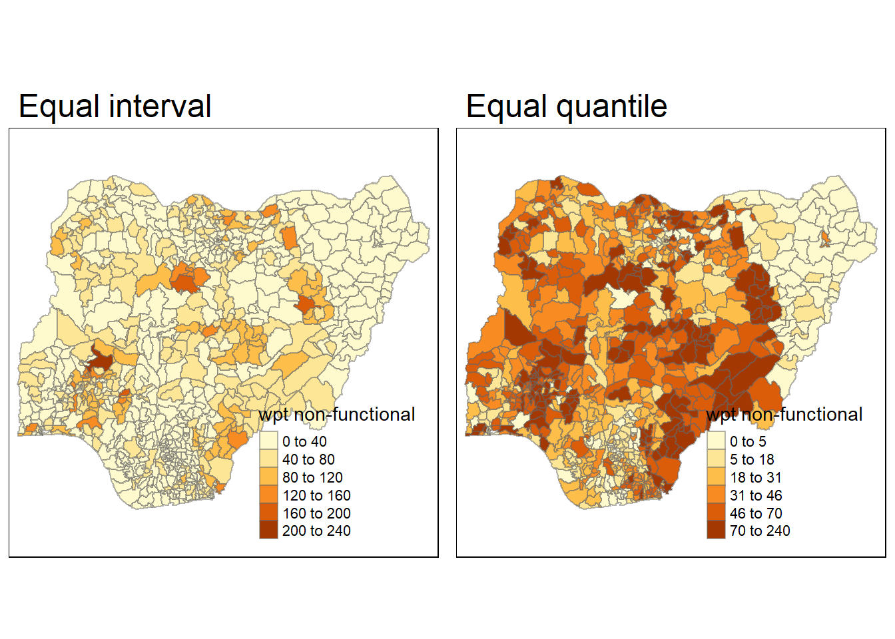
Computing Contiguity Spatial Weights
Is the distribution of functional water points across Nigeria equal?
Before we compute the global spatial autocorrelation statistics, we need to construct a spatial weights. The spatial weights is used to define the neighbourhood relationships between the local government areas in Nigeria.
First of all, we need to select an appropriate spatial weighing method to calculate the spatial weight matrix.
Polygon Contiguity Method
The polygon contiguity method is effective when polygons are similar in size and distribution, and when spatial relationships are a function of polygon proximity (the idea that if two polygons share a boundary, spatial interaction between them increases).
The code chunk below is used to show the boundary line of LGA in Nigeria.
nigeria_lga <- tm_shape(nga_wp) +
tm_polygons()
nigeria_lga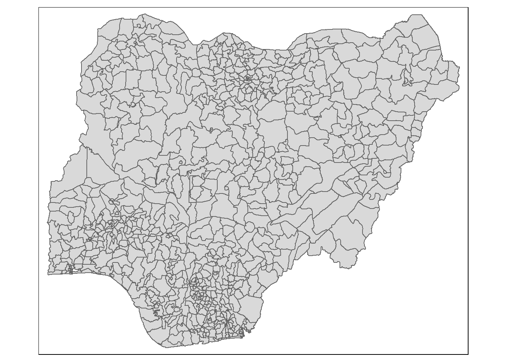
The size and distribution of LGA in Nigeria is not similar. Some LGA are more dense and have shorter boundary.
Distance-based neighbours
To use distance-based method, the first step is to get the centroid of each polygon by running st_centroid on the sf package.
coords <- st_centroid(st_geometry(nga_wp))k1 <- knn2nb(knearneigh(coords))
k1dists <- unlist(nbdists(k1, coords, longlat = TRUE))
summary(k1dists) Min. 1st Qu. Median Mean 3rd Qu. Max.
2669 12834 20304 22084 27783 72139 The summary report shows that the largest first-nearest neighbour distance is 72139 km, which will be used as the upper threshold in order to make sure all LGA will have at least one neighbour.
Computing fixed distance weight matrix
The fixed distance method often is a good option for polygon data when there is a large variation in polygon size.
upper_therhold <- 72200
wm_d <- dnearneigh(coords, 0, upper_therhold, longlat = TRUE)
wm_dNeighbour list object:
Number of regions: 774
Number of nonzero links: 18158
Percentage nonzero weights: 3.031001
Average number of links: 23.45995 The report shows that the average number of links for each region is 23.46, which may be skewed for the analysis.
Computing adaptive distance weight matrix
Adaptive distance can adjust itself according to the density of data. K-nearest neighbours can be used to control the numbers of neighbours directly. The numbers of neighbours can be assigned to knearhneigh() and the neighbours can be designated based on the distance between centroids.
The code chunk below is used to control the numbers of neighbours at 8.
knn8 <- knn2nb(knearneigh(coords, k=8))
knn8Neighbour list object:
Number of regions: 774
Number of nonzero links: 6192
Percentage nonzero weights: 1.033592
Average number of links: 8
Non-symmetric neighbours listThe code chunk below is used to plot the adaptive distance based neighbours.
plot(nga_wp$geometry, border="lightgrey")
plot(knn8, coords, pch = 19, cex = 0.6, add = TRUE, col = "red")
K-nearest neighbours method is chosen as the spatial weighting method.
Row-standardised weight matrix
Next, we need to assign weights to each neighbouring polygon. In our case, each neighbouring will be assigned equal weight.
rsknn8 <- nb2listw(knn8,
style="W",
zero.policy = TRUE)
rsknn8Characteristics of weights list object:
Neighbour list object:
Number of regions: 774
Number of nonzero links: 6192
Percentage nonzero weights: 1.033592
Average number of links: 8
Non-symmetric neighbours list
Weights style: W
Weights constants summary:
n nn S0 S1 S2
W 774 599076 774 174.2812 3155.312Global Spatial Autocorrelation
Global Spatial Autocorrelation: Moran’s I
Moran’s I Test
The code chunk below performs Moran’s I statistical testing using moran.test() of spdep.
moran.test(nga_wp$`pct_non-functional`,
listw=rsknn8,
zero.policy = TRUE,
na.action=na.omit)
Moran I test under randomisation
data: nga_wp$`pct_non-functional`
weights: rsknn8
omitted: 3, 86, 241, 250, 252, 261, 400, 406, 447, 473, 492, 507, 526
Moran I statistic standard deviate = 26.049, p-value < 2.2e-16
alternative hypothesis: greater
sample estimates:
Moran I statistic Expectation Variance
0.4467499630 -0.0013157895 0.0002958736 Computing Monte Carlo Moran’s I
The code chunk below performs permutation test for Moran’s I statistic by using moran.mc() of spdep. A total of 1000 simulation will be performed.
set.seed(1234)
bperm= moran.mc(nga_wp$`pct_non-functional`,
listw=rsknn8,
nsim=999,
zero.policy = TRUE,
na.action=na.omit)
bperm
Monte-Carlo simulation of Moran I
data: nga_wp$`pct_non-functional`
weights: rsknn8
omitted: 3, 86, 241, 250, 252, 261, 400, 406, 447, 473, 492, 507, 526
number of simulations + 1: 1000
statistic = 0.44675, observed rank = 1000, p-value = 0.001
alternative hypothesis: greaterVisualising Monte Carlo Moran’s I
The code chunk below is used to plot the distribution of Monte Carlo test result.
mean(bperm$res[1:999])[1] -0.001462387var(bperm$res[1:999])[1] 0.0002943097summary(bperm$res[1:999]) Min. 1st Qu. Median Mean 3rd Qu. Max.
-0.058672 -0.013135 -0.002166 -0.001462 0.010635 0.054348 hist(bperm$res,
freq=TRUE,
breaks=20,
xlab="Simulated Moran's I")
abline(v=0,
col="red") 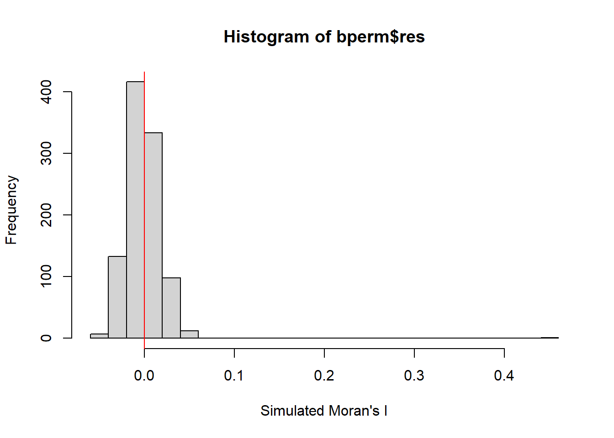
Computing Moran’s I correlogram
In the code chunk below, sp.correlogram() of spdep package is used to compute a 8-lag spatial correlogram of GDPPC. The global spatial autocorrelation used in Moran’s I. The plot() of base Graph is then used to plot the output.
MI_corr <- sp.correlogram(knn8,
nga_wp$`wpt non-functional`,
order=8,
method="I",
style="W")
plot(MI_corr)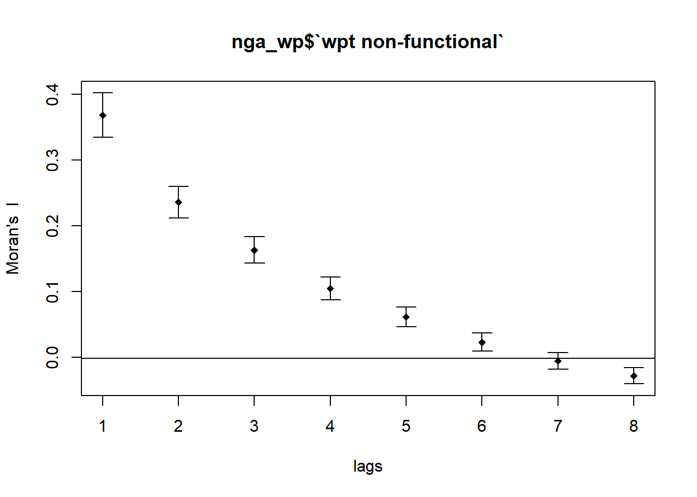
Cluster and Outlier Analysis
Local Indicators of Spatial Association or LISA are statistics that evaluate the existence of clusters in the spatial arrangement of a given variable.
Computing local Moran’s I
To compute local Moran’s I, the localmoran() function of spdep will be used. It computes Ii values, given a set of zi values and a listw object providing neighbour weighting information for the polygon associated with the zi values.
fips <- order(nga_wp$`wpt non-functional`)
localMI <- localmoran(nga_wp$`wpt non-functional`, rsknn8)
head(localMI) Ii E.Ii Var.Ii Z.Ii Pr(z != E(Ii))
1 -0.12255190 -9.573039e-04 0.0916914829 -0.4015594 0.688008333
2 -0.01859105 -1.341408e-05 0.0012860273 -0.5180426 0.604428569
3 1.26057597 -1.630758e-03 0.1560902703 3.1947919 0.001399317
4 -0.02773766 -2.219984e-05 0.0021283116 -0.6007649 0.547996609
5 0.06302928 -2.003354e-04 0.0192028498 0.4562866 0.648183927
6 0.04698520 -6.929289e-06 0.0006643253 1.8232018 0.068272838Mapping the local Moran’s
Using choropleth mapping functions of tmap package, we can plot the local Moran’s I values by using the code chinks below.
nga_wp.localMI <- cbind(nga_wp,localMI) %>%
rename(Pr.Ii = Pr.z....E.Ii..)tm_shape(nga_wp.localMI) +
tm_fill(col = "Ii",
style = "pretty",
palette = "RdBu",
title = "local moran statistics") +
tm_borders(alpha = 0.5)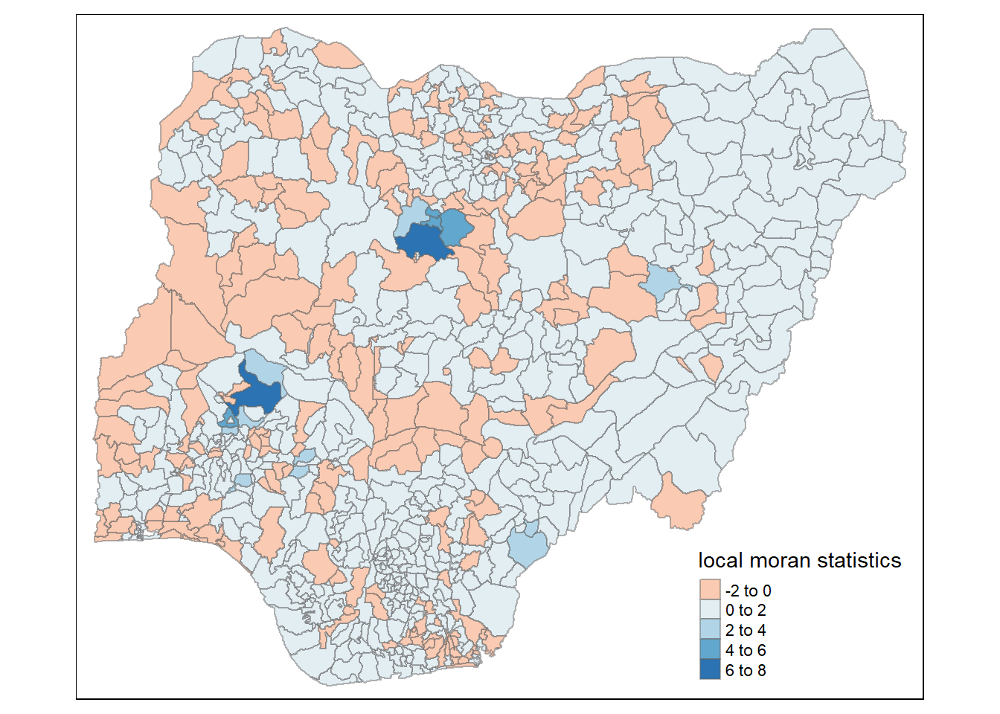
Mapping both local Moran’s I values and p-values
For effective interpretation, it is better to plot both the local Moran’s I values map and its corresponding p-values map next to each other.
The code chunk below will be used to create such visualisation.
localMI.map <- tm_shape(nga_wp.localMI) +
tm_fill(col = "Ii",
style = "pretty",
title = "local moran statistics") +
tm_borders(alpha = 0.5)
pvalue.map <- tm_shape(nga_wp.localMI) +
tm_fill(col = "Pr.Ii",
breaks=c(-Inf, 0.001, 0.01, 0.05, 0.1, Inf),
palette="-Blues",
title = "local Moran's I p-values") +
tm_borders(alpha = 0.5)
tmap_arrange(localMI.map, pvalue.map, asp=1, ncol=2)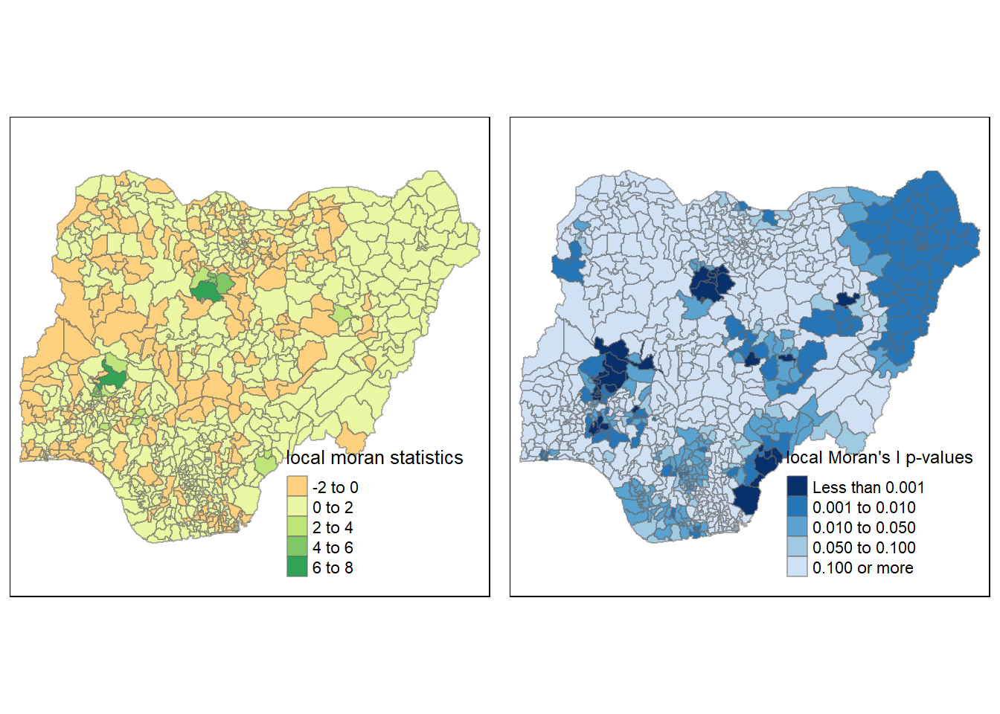
Creating a LISA Cluster Map
The LISA Cluster Map shows the significant locations color coded by type of spatial autocorrelation. The first step before we can generate the LISA cluster map is to plot the Moran scatterplot.
Plotting Moran scatterplot
The Moran scatterplot is an illustration of the relationship between the values of the chosen attribute at each location and the average value of the same attribute at neighboring locations.
nci <- moran.plot(nga_wp$`wpt non-functional`, rsknn8,
labels=as.character(nga_wp$ADM2_EN),
xlab="Non-Functional waterpoints",
ylab="Spatially Lag Non-functional waterpoints")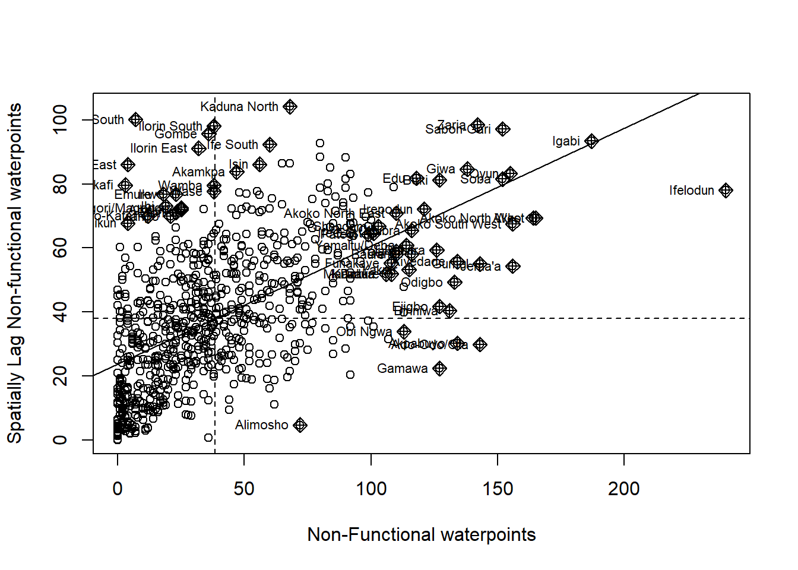
Plotting Moran scatterplot with standardised variable
nga_wp$Z.nonfunc <- scale(nga_wp$`wpt non-functional`) %>%
as.vector
nci2 <- moran.plot(nga_wp$Z.nonfunc, rsknn8,
labels=as.character(nga_wp$ADM2_EN),
xlab="z-no functional points",
ylab="Spatially Lag non functional points")Preparing LISA map classes
The code chunks below show the steps to prepare a LISA cluster map.
quadrant <- vector(mode="numeric",length=nrow(localMI))Next, derives the spatially lagged variable of interest and centers the spatially lagged variable around its mean.
nga_wp$lag_non_func_points <- lag.listw(rsknn8, nga_wp$`wpt non-functional`)
DV <- nga_wp$lag_non_func_points - mean(nga_wp$lag_non_func_points)LM_I <- localMI[,1] - mean(localMI[,1]) signif <- 0.05 quadrant[DV <0 & LM_I>0] <- 1
quadrant[DV >0 & LM_I<0] <- 2
quadrant[DV <0 & LM_I<0] <- 3
quadrant[DV >0 & LM_I>0] <- 4 quadrant[localMI[,5]>signif] <- 0Plotting LISA map
Now, we can build the LISA map by using the code chunks below.
nga_wp.localMI$quadrant <- quadrant
colors <- c("#ffffff", "#2c7bb6", "#abd9e9", "#fdae61", "#d7191c")
clusters <- c("insignificant", "low-low", "low-high", "high-low", "high-high")
tm_shape(nga_wp.localMI) +
tm_fill(col = "quadrant",
style = "cat",
palette = colors[c(sort(unique(quadrant)))+1],
labels = clusters[c(sort(unique(quadrant)))+1],
popup.vars = c("")) +
tm_view(set.zoom.limits = c(11,17)) +
tm_borders(alpha=0.5)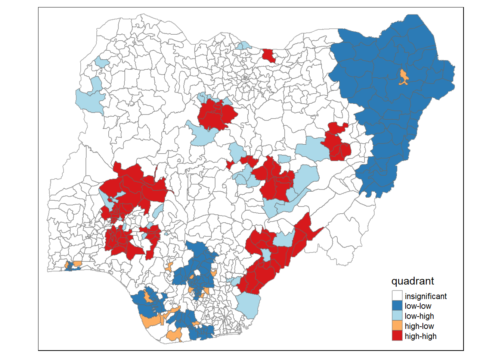
For effective interpretation, it is better to plot both the local Moran’s I values map and its corresponding p-values map next to each other.
The code chunk below will be used to create such visualisation.
gdppc <- qtm(nga_wp,"wpt non-functional")
nga_wp.localMI$quadrant <- quadrant
colors <- c("#ffffff", "#2c7bb6", "#abd9e9", "#fdae61", "#d7191c")
clusters <- c("insignificant", "low-low", "low-high", "high-low", "high-high")
LISAmap <- tm_shape(nga_wp.localMI) +
tm_fill(col = "quadrant",
style = "cat",
palette = colors[c(sort(unique(quadrant)))+1],
labels = clusters[c(sort(unique(quadrant)))+1],
popup.vars = c("")) +
tm_view(set.zoom.limits = c(11,17)) +
tm_borders(alpha=0.5)
tmap_arrange(wp_nonfunctional, LISAmap,
asp=1, ncol=2)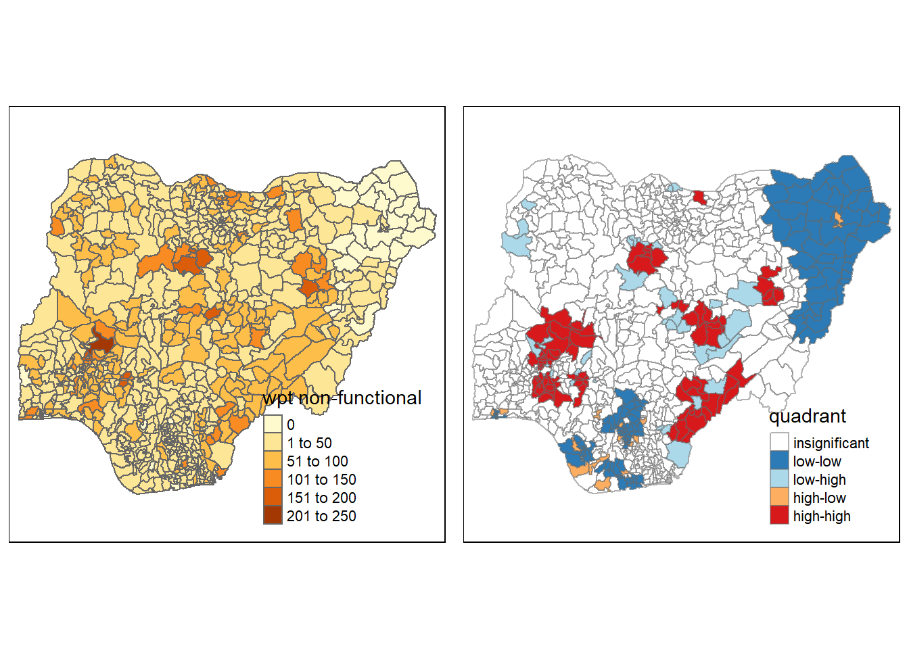
Hot Spot and Cold Spot Area Analysis
Beside detecting cluster and outliers, localised spatial statistics can be also used to detect hot spot and/or cold spot areas.
Getis and Ord’s G-Statistics
The analysis consists of three steps:
Deriving spatial weight matrix
Computing Gi statistics
Mapping Gi statistics
Deriving distance-based weight matrix
Deriving the centroid
longitude <- map_dbl(nga_wp$geometry, ~st_centroid(.x)[[1]])
latitude <- map_dbl(nga_wp$geometry, ~st_centroid(.x)[[2]])
coords <- cbind(longitude, latitude)Determine the cut-off distance
Firstly, we need to determine the upper limit for distance band by using the steps below:
Return a matrix with the indices of points belonging to the set of the k nearest neighbours of each other by using knearneigh() of spdep.
Convert the knn object returned by knearneigh() into a neighbours list of class nb with a list of integer vectors containing neighbour region number ids by using knn2nb().
Return the length of neighbour relationship edges by using nbdists() of spdep. The function returns in the units of the coordinates if the coordinates are projected, in km otherwise.
Remove the list structure of the returned object by using unlist().
coords <- st_centroid(st_geometry(nga_wp))#coords <- coordinates(nga_wp)
k1 <- knn2nb(knearneigh(coords))
k1dists <- unlist(nbdists(k1, coords, longlat = TRUE))
summary(k1dists) Min. 1st Qu. Median Mean 3rd Qu. Max.
2669 12834 20304 22084 27783 72139 The summary report shows that the largest first nearest neighbour distance is 72.139 km, so using this as the upper threshold gives certainty that all units will have at least one neighbour.
Computing fixed distance weight matrix
Now, we will compute the distance weight matrix by using dnearneigh() as shown in the code chunk below.
wm_d72 <- dnearneigh(coords, 0, 720000, longlat = TRUE)
wm_d72Neighbour list object:
Number of regions: 774
Number of nonzero links: 463284
Percentage nonzero weights: 77.33309
Average number of links: 598.5581 wm72_lw <- nb2listw(wm_d72, style = 'B')
summary(wm72_lw)Characteristics of weights list object:
Neighbour list object:
Number of regions: 774
Number of nonzero links: 463284
Percentage nonzero weights: 77.33309
Average number of links: 598.5581
Link number distribution:
210 229 239 246 247 255 264 271 279 280 285 288 292 296 298 300 305 308 315 317
1 1 1 2 2 1 1 1 1 1 2 1 1 1 1 1 1 1 1 1
321 322 325 326 329 331 336 344 346 351 357 363 368 374 376 378 380 383 386 388
1 1 1 1 1 1 1 1 1 1 1 1 1 1 1 2 1 1 1 1
391 393 395 398 402 409 415 417 419 420 423 425 429 430 432 433 436 439 440 441
1 1 1 2 1 2 2 1 1 1 2 1 1 1 2 3 2 1 2 1
442 447 448 451 452 454 456 460 465 466 467 470 471 472 474 475 476 477 478 479
1 1 2 3 2 1 1 2 1 2 2 2 1 1 2 1 1 1 1 1
481 482 483 486 487 491 493 495 496 497 499 500 502 504 505 506 507 508 510 511
1 1 1 2 1 2 2 1 2 1 1 3 3 1 1 2 2 2 1 2
512 514 515 516 517 518 519 520 521 522 523 524 525 526 527 528 529 530 531 532
3 5 1 2 4 2 1 7 1 3 5 5 3 3 1 9 3 7 2 1
533 534 535 537 538 539 540 541 542 543 544 545 546 547 548 549 550 551 552 553
3 5 2 4 2 2 3 2 5 2 3 3 5 5 1 4 3 3 1 6
554 555 556 557 558 559 560 562 563 565 566 567 568 569 570 571 572 573 574 575
1 3 2 4 3 1 2 1 2 4 2 3 1 5 3 1 3 1 3 1
576 578 579 580 581 582 583 584 585 586 587 588 589 591 592 593 594 595 597 598
3 2 3 4 3 1 2 2 1 4 1 3 2 2 3 1 1 1 5 1
600 601 602 603 604 605 606 608 609 610 611 612 613 614 615 616 617 618 620 621
1 1 5 3 1 2 1 3 3 4 5 6 5 1 1 4 2 1 3 2
622 623 624 626 627 628 629 630 632 633 634 635 636 637 638 639 640 641 643 644
2 4 1 5 3 3 1 2 6 5 3 3 2 4 4 1 3 3 4 3
646 647 648 649 650 651 652 653 655 656 657 658 659 660 661 662 663 664 666 668
2 1 2 1 2 5 4 7 4 2 4 2 2 2 1 5 3 6 2 2
669 670 671 672 673 674 675 676 677 678 679 680 681 682 683 684 685 686 687 688
2 6 2 2 3 3 5 5 2 2 2 1 2 1 1 6 2 2 4 2
689 690 691 692 693 694 695 696 697 698 699 700 701 702 703 704 706 708 709 710
7 2 2 1 1 1 2 2 1 2 3 4 2 1 1 1 4 2 5 2
711 713 714 715 716 717 718 719 720 721 722 723 724 725 726 727 728 729 730 731
2 1 1 3 3 2 3 2 1 1 4 3 1 3 6 1 3 2 1 2
732 733 734 735 737 738 739 740 741 742 743 744 745 746 747 748 749 750 751 752
1 2 4 1 4 1 3 3 1 2 5 1 2 3 2 2 1 2 2 5
753 754 755 756 758 759 760 761 762 763 764 765 766 767 768 769 770 771 772 773
1 2 2 2 1 1 4 4 2 1 5 3 2 3 3 3 2 4 3 1
1 least connected region:
406 with 210 links
1 most connected region:
423 with 773 links
Weights style: B
Weights constants summary:
n nn S0 S1 S2
B 774 599076 463284 926568 1150174576Computing adaptive distance weight matrix
knn <- knn2nb(knearneigh(coords, k=8))
knnNeighbour list object:
Number of regions: 774
Number of nonzero links: 6192
Percentage nonzero weights: 1.033592
Average number of links: 8
Non-symmetric neighbours listknn_lw <- nb2listw(knn, style = 'B')
summary(knn_lw)Characteristics of weights list object:
Neighbour list object:
Number of regions: 774
Number of nonzero links: 6192
Percentage nonzero weights: 1.033592
Average number of links: 8
Non-symmetric neighbours list
Link number distribution:
8
774
774 least connected regions:
1 2 3 4 5 6 7 8 9 10 11 12 13 14 15 16 17 18 19 20 21 22 23 24 25 26 27 28 29 30 31 32 33 34 35 36 37 38 39 40 41 42 43 44 45 46 47 48 49 50 51 52 53 54 55 56 57 58 59 60 61 62 63 64 65 66 67 68 69 70 71 72 73 74 75 76 77 78 79 80 81 82 83 84 85 86 87 88 89 90 91 92 93 94 95 96 97 98 99 100 101 102 103 104 105 106 107 108 109 110 111 112 113 114 115 116 117 118 119 120 121 122 123 124 125 126 127 128 129 130 131 132 133 134 135 136 137 138 139 140 141 142 143 144 145 146 147 148 149 150 151 152 153 154 155 156 157 158 159 160 161 162 163 164 165 166 167 168 169 170 171 172 173 174 175 176 177 178 179 180 181 182 183 184 185 186 187 188 189 190 191 192 193 194 195 196 197 198 199 200 201 202 203 204 205 206 207 208 209 210 211 212 213 214 215 216 217 218 219 220 221 222 223 224 225 226 227 228 229 230 231 232 233 234 235 236 237 238 239 240 241 242 243 244 245 246 247 248 249 250 251 252 253 254 255 256 257 258 259 260 261 262 263 264 265 266 267 268 269 270 271 272 273 274 275 276 277 278 279 280 281 282 283 284 285 286 287 288 289 290 291 292 293 294 295 296 297 298 299 300 301 302 303 304 305 306 307 308 309 310 311 312 313 314 315 316 317 318 319 320 321 322 323 324 325 326 327 328 329 330 331 332 333 334 335 336 337 338 339 340 341 342 343 344 345 346 347 348 349 350 351 352 353 354 355 356 357 358 359 360 361 362 363 364 365 366 367 368 369 370 371 372 373 374 375 376 377 378 379 380 381 382 383 384 385 386 387 388 389 390 391 392 393 394 395 396 397 398 399 400 401 402 403 404 405 406 407 408 409 410 411 412 413 414 415 416 417 418 419 420 421 422 423 424 425 426 427 428 429 430 431 432 433 434 435 436 437 438 439 440 441 442 443 444 445 446 447 448 449 450 451 452 453 454 455 456 457 458 459 460 461 462 463 464 465 466 467 468 469 470 471 472 473 474 475 476 477 478 479 480 481 482 483 484 485 486 487 488 489 490 491 492 493 494 495 496 497 498 499 500 501 502 503 504 505 506 507 508 509 510 511 512 513 514 515 516 517 518 519 520 521 522 523 524 525 526 527 528 529 530 531 532 533 534 535 536 537 538 539 540 541 542 543 544 545 546 547 548 549 550 551 552 553 554 555 556 557 558 559 560 561 562 563 564 565 566 567 568 569 570 571 572 573 574 575 576 577 578 579 580 581 582 583 584 585 586 587 588 589 590 591 592 593 594 595 596 597 598 599 600 601 602 603 604 605 606 607 608 609 610 611 612 613 614 615 616 617 618 619 620 621 622 623 624 625 626 627 628 629 630 631 632 633 634 635 636 637 638 639 640 641 642 643 644 645 646 647 648 649 650 651 652 653 654 655 656 657 658 659 660 661 662 663 664 665 666 667 668 669 670 671 672 673 674 675 676 677 678 679 680 681 682 683 684 685 686 687 688 689 690 691 692 693 694 695 696 697 698 699 700 701 702 703 704 705 706 707 708 709 710 711 712 713 714 715 716 717 718 719 720 721 722 723 724 725 726 727 728 729 730 731 732 733 734 735 736 737 738 739 740 741 742 743 744 745 746 747 748 749 750 751 752 753 754 755 756 757 758 759 760 761 762 763 764 765 766 767 768 769 770 771 772 773 774 with 8 links
774 most connected regions:
1 2 3 4 5 6 7 8 9 10 11 12 13 14 15 16 17 18 19 20 21 22 23 24 25 26 27 28 29 30 31 32 33 34 35 36 37 38 39 40 41 42 43 44 45 46 47 48 49 50 51 52 53 54 55 56 57 58 59 60 61 62 63 64 65 66 67 68 69 70 71 72 73 74 75 76 77 78 79 80 81 82 83 84 85 86 87 88 89 90 91 92 93 94 95 96 97 98 99 100 101 102 103 104 105 106 107 108 109 110 111 112 113 114 115 116 117 118 119 120 121 122 123 124 125 126 127 128 129 130 131 132 133 134 135 136 137 138 139 140 141 142 143 144 145 146 147 148 149 150 151 152 153 154 155 156 157 158 159 160 161 162 163 164 165 166 167 168 169 170 171 172 173 174 175 176 177 178 179 180 181 182 183 184 185 186 187 188 189 190 191 192 193 194 195 196 197 198 199 200 201 202 203 204 205 206 207 208 209 210 211 212 213 214 215 216 217 218 219 220 221 222 223 224 225 226 227 228 229 230 231 232 233 234 235 236 237 238 239 240 241 242 243 244 245 246 247 248 249 250 251 252 253 254 255 256 257 258 259 260 261 262 263 264 265 266 267 268 269 270 271 272 273 274 275 276 277 278 279 280 281 282 283 284 285 286 287 288 289 290 291 292 293 294 295 296 297 298 299 300 301 302 303 304 305 306 307 308 309 310 311 312 313 314 315 316 317 318 319 320 321 322 323 324 325 326 327 328 329 330 331 332 333 334 335 336 337 338 339 340 341 342 343 344 345 346 347 348 349 350 351 352 353 354 355 356 357 358 359 360 361 362 363 364 365 366 367 368 369 370 371 372 373 374 375 376 377 378 379 380 381 382 383 384 385 386 387 388 389 390 391 392 393 394 395 396 397 398 399 400 401 402 403 404 405 406 407 408 409 410 411 412 413 414 415 416 417 418 419 420 421 422 423 424 425 426 427 428 429 430 431 432 433 434 435 436 437 438 439 440 441 442 443 444 445 446 447 448 449 450 451 452 453 454 455 456 457 458 459 460 461 462 463 464 465 466 467 468 469 470 471 472 473 474 475 476 477 478 479 480 481 482 483 484 485 486 487 488 489 490 491 492 493 494 495 496 497 498 499 500 501 502 503 504 505 506 507 508 509 510 511 512 513 514 515 516 517 518 519 520 521 522 523 524 525 526 527 528 529 530 531 532 533 534 535 536 537 538 539 540 541 542 543 544 545 546 547 548 549 550 551 552 553 554 555 556 557 558 559 560 561 562 563 564 565 566 567 568 569 570 571 572 573 574 575 576 577 578 579 580 581 582 583 584 585 586 587 588 589 590 591 592 593 594 595 596 597 598 599 600 601 602 603 604 605 606 607 608 609 610 611 612 613 614 615 616 617 618 619 620 621 622 623 624 625 626 627 628 629 630 631 632 633 634 635 636 637 638 639 640 641 642 643 644 645 646 647 648 649 650 651 652 653 654 655 656 657 658 659 660 661 662 663 664 665 666 667 668 669 670 671 672 673 674 675 676 677 678 679 680 681 682 683 684 685 686 687 688 689 690 691 692 693 694 695 696 697 698 699 700 701 702 703 704 705 706 707 708 709 710 711 712 713 714 715 716 717 718 719 720 721 722 723 724 725 726 727 728 729 730 731 732 733 734 735 736 737 738 739 740 741 742 743 744 745 746 747 748 749 750 751 752 753 754 755 756 757 758 759 760 761 762 763 764 765 766 767 768 769 770 771 772 773 774 with 8 links
Weights style: B
Weights constants summary:
n nn S0 S1 S2
B 774 599076 6192 11154 201940Computing Gi statistics
Gi statistics using fixed distance
fips <- order(nga_wp$`wpt non-functional`)
gi.fixed <- localG(nga_wp$`wpt non-functional`, wm72_lw)
gi.fixed [1] 2.981099160 3.034849257 0.133661596 5.034256577 3.020998650
[6] 2.499911967 1.696726269 2.064808138 1.755165578 3.464417323
[11] 2.797975852 4.075286383 6.364824442 3.724699953 1.641796486
[16] 5.493300145 2.115206199 1.716911971 1.910080610 5.923625129
[21] 4.387999651 2.431905221 2.465091585 5.309844527 2.901070136
[26] 3.119241244 2.891276061 2.216472989 2.169637574 5.665284680
[31] 6.233400105 2.213667443 4.594237581 2.483983156 1.781691579
[36] 0.121275685 6.654401157 6.628976166 6.726663908 6.429044958
[41] 5.952167311 2.783000706 1.861485090 4.355925251 3.941173814
[46] 2.248544820 4.312983178 6.158133651 2.347232823 1.163601076
[51] 2.224031169 2.922141455 3.844136153 2.168455402 2.028556129
[56] 1.841960614 3.405055028 3.168969971 6.243733410 4.801289896
[61] 4.428172524 2.308163482 -1.279455889 6.861564745 6.640323797
[66] 2.586840510 3.955788599 2.748647624 2.171119219 2.567697249
[71] 2.796911194 2.554318555 1.254758736 7.524121783 3.174281171
[76] -0.738325997 1.892574795 3.084701275 2.505405316 4.159951337
[81] 4.933931718 0.833435744 1.410859712 3.311316538 4.882909467
[86] 2.833624230 3.745829343 7.395449101 -0.603221047 0.882756691
[91] 0.393923889 -1.450212650 2.345793620 5.925592764 -0.543647156
[96] 6.232351669 6.619342884 2.902639641 4.690892890 0.288661202
[101] 4.322735795 2.321983922 2.693147495 2.538073968 5.400835858
[106] 6.342864260 -0.075319241 6.039961296 7.751243736 1.963877641
[111] 4.115796412 4.495764098 6.542825862 6.012183167 2.042408627
[116] 7.226672889 1.933617429 1.480052053 -1.012144169 3.788720138
[121] 2.982214912 1.807519062 3.396350715 3.771739692 5.371428304
[126] 1.572214608 3.374254525 5.984020017 5.477998669 4.384520116
[131] 5.740138949 0.955497983 1.120553749 3.019222930 3.567482155
[136] 2.693550573 2.965277717 5.141470415 5.871786940 2.125057130
[141] 3.193849031 4.873666158 1.904617295 2.957760757 5.635653327
[146] 1.922657534 5.214928985 5.001467825 3.025557236 7.602250253
[151] 2.094630106 1.454307736 2.146740013 5.490234639 4.676333635
[156] 5.275454643 2.302134329 5.848651596 -0.778274095 0.378789800
[161] 3.267634766 3.746589325 1.459566598 0.847584449 2.811524874
[166] 4.225959398 5.425880784 5.618258740 1.960776501 2.967678416
[171] 7.089630709 2.453231902 2.401929224 7.641925099 3.884102063
[176] 2.039037987 1.570197288 1.755946507 2.447970614 2.910847829
[181] 2.361956264 2.522865791 2.708404418 2.402107990 6.474932753
[186] 6.872416411 4.221965370 4.634462771 2.768254970 2.912053355
[191] 3.080989510 5.774120731 4.106070133 3.542429230 2.811488556
[196] 2.836376828 4.392496440 4.642091150 4.593059195 4.075992885
[201] 3.045731555 2.247132948 3.033028309 3.100208732 2.686834866
[206] 2.547004090 2.827308498 2.907258213 2.840407952 5.718280383
[211] 5.864175214 5.872990267 1.257203909 2.072906155 2.929499246
[216] 3.276437648 2.243452164 1.633339439 4.930966730 4.957356071
[221] 3.472347518 1.712038680 0.598857748 0.482673183 1.441842732
[226] 2.845943199 5.095514823 7.698409400 4.088786242 1.791450887
[231] 4.193248808 -1.869998181 5.038384661 4.687160247 4.405733302
[236] -1.732853197 1.412739924 4.509464840 6.160046481 1.881775857
[241] 1.088583401 4.877909840 2.594495056 0.510868956 3.211826623
[246] 2.614200354 -0.153138655 1.740458171 8.242199671 0.987425281
[251] 7.427067444 2.073248603 1.685574968 2.369427660 4.042312082
[256] 5.881662504 4.392175836 1.931199402 4.450039479 -0.278012233
[261] 0.506922195 8.073310019 4.642649317 4.829642342 6.326079633
[266] 3.518688229 4.576287163 2.840307915 3.455070765 5.559184692
[271] 1.736443632 3.074134918 1.771262050 2.409645607 1.787304594
[276] 1.864346932 1.866634863 1.915731852 1.972035190 5.454238964
[281] 1.698777572 1.981972160 1.798770497 3.166956132 2.406913733
[286] 2.941585365 0.885009144 2.807115258 5.630081479 2.033043409
[291] 2.375531443 2.516929498 2.769867729 2.527633284 1.894103832
[296] 5.424143619 2.370511398 2.426598947 2.196580382 2.246588436
[301] 1.981532348 5.221433923 3.794308135 6.237955102 3.773666209
[306] 2.280175232 2.584106750 5.993905471 5.141865443 5.404850277
[311] 5.374254984 3.541350880 2.678196643 2.462366858 2.494161380
[316] 2.180224221 2.267560667 2.470653375 5.457588626 7.111190865
[321] 2.992447489 3.329795564 2.730063456 3.896224344 3.201880717
[326] 2.434337555 2.510836719 5.089148731 6.942461285 1.071740206
[331] 2.940911277 2.805775876 2.549543985 2.990557518 2.845429761
[336] 3.033168827 1.393630333 3.120071491 5.036407521 3.045760733
[341] 2.345961816 5.921911361 3.484015538 3.488178777 7.562017705
[346] 5.403496592 4.061705027 4.097040554 1.327109432 5.764268368
[351] 3.264600172 0.880313776 2.697066607 3.330625179 5.249112801
[356] 3.417591222 5.407443901 2.206665781 7.990088130 5.296641660
[361] 1.464208674 3.147946209 4.578141779 3.418552036 3.211679287
[366] 2.641502160 5.864395304 2.519118259 2.058174280 2.903650991
[371] 2.950589437 2.887219008 3.945702160 1.408043840 2.788348561
[376] 2.225016624 1.313078951 2.230437879 2.784585361 2.247989224
[381] -1.770780608 4.646982440 1.718940734 -1.405242557 3.379769645
[386] 5.269483551 1.953146614 1.214390290 6.457660955 2.679557447
[391] 0.459141593 -1.448189097 6.349298530 4.659518484 3.186601836
[396] 2.755926708 2.984995174 3.694661497 4.082920177 1.906269265
[401] 3.385548706 3.718858481 5.138456517 1.369823819 -1.009969860
[406] -1.444079822 6.204927570 0.198333524 1.775510951 4.800677813
[411] 2.005722795 5.674341787 4.814701827 1.264851568 4.172593573
[416] 0.180896586 3.382152132 3.206762168 5.928999968 5.833161332
[421] 0.319155909 3.573324499 Inf 6.747611449 1.587285381
[426] 5.499528777 2.639613610 4.990239361 3.386967292 2.719383640
[431] 4.535407887 2.760854885 2.176983088 4.289969319 3.908298937
[436] 5.741546437 3.857279249 3.383604833 2.839321318 1.652217608
[441] 2.404402822 7.206591498 2.663600116 2.705471907 2.866328964
[446] 4.533149836 -0.649483105 4.640120189 5.829990502 4.375788490
[451] 6.244866363 1.488168255 5.502340238 4.903954496 -0.013935784
[456] 1.731028850 7.856509946 1.104573820 2.247930846 2.031823058
[461] 2.488759893 2.520750950 -0.566444786 0.981354483 0.999631303
[466] 5.625757530 -1.310356500 7.014691183 -0.474437993 0.597647875
[471] 6.224445058 1.943312401 2.027693239 4.383754961 1.047116576
[476] 6.928569977 1.417780641 4.595575084 1.305365370 3.446855643
[481] 2.544228352 4.814266702 5.526810379 3.345506547 3.080430338
[486] 4.312282503 0.501366780 5.829075155 7.106954795 6.642283117
[491] 4.187558321 0.321881974 4.814801427 7.518143529 5.105284534
[496] 5.542258774 -1.478219452 3.254817942 2.052938524 2.032505745
[501] 4.284901060 2.275867312 5.415416349 2.022871842 2.932883617
[506] 5.541980876 0.743083189 7.677968686 0.548908649 6.878743996
[511] 4.318562750 2.170741733 2.386005117 5.001377428 2.498718154
[516] 3.915151434 1.298026779 1.832611390 4.843672483 4.075523890
[521] 2.514365856 2.884152965 2.834320732 1.823093085 -1.005537494
[526] 0.904232147 5.456809313 3.259667410 1.587917089 4.547839436
[531] 2.827418817 2.695401830 2.488701356 2.545821192 2.648773198
[536] 2.505643063 2.597418992 2.880941116 3.007408480 2.670174234
[541] 5.302551883 -0.651582466 2.583523226 2.259782243 1.905856117
[546] 2.951339892 2.529177732 2.759681700 3.084147359 3.838428774
[551] 3.131044282 2.809584456 1.369874796 1.900643905 2.094484172
[556] 2.257876251 3.842599656 2.443117518 2.760717330 4.158228617
[561] 5.826341659 3.367167286 4.712865525 2.849859344 2.570423759
[566] 3.433290574 3.423509319 2.540422647 2.362614274 6.394042946
[571] 2.587518332 2.968831122 2.759636533 2.732676977 3.148039693
[576] 1.795871470 3.075449318 4.444905190 2.219435143 1.402514654
[581] 2.964677254 6.257737635 6.593181376 6.865139912 2.416413675
[586] 2.585887478 2.885601841 2.857740170 4.533633151 2.663408964
[591] 2.469101494 5.122007934 3.776746465 3.529069295 2.067573848
[596] 4.940914440 3.012899337 1.846103666 2.133414043 2.099352347
[601] 1.790932903 2.763277214 2.795634994 2.472787039 2.141251480
[606] 2.831967508 3.101181578 3.072250521 3.403655168 3.546544307
[611] 2.540304492 3.638211378 2.991980693 2.591463172 2.968791342
[616] 2.811278710 2.999851077 2.122026959 2.261631997 4.893563727
[621] 3.297933565 3.033528507 2.417027607 2.986708681 3.449070691
[626] 4.308179567 2.709322633 2.588770925 5.847980213 4.698286702
[631] 3.036378108 3.014600851 3.048344951 4.894882009 5.905230373
[636] 2.744669163 2.946354937 2.121708074 2.174286711 4.087796012
[641] 4.785416381 2.578467568 2.887376312 7.132004294 2.868520816
[646] 1.532297083 -0.502459212 7.846245693 5.572379239 4.479307401
[651] 2.233284914 6.388151574 6.113445923 4.605237830 5.370982901
[656] -1.015160784 4.067873441 5.617407337 2.628341680 8.029769036
[661] 3.476729282 5.811598472 2.806663367 6.359750089 2.546623053
[666] 1.053669911 5.412355597 1.121653091 2.950960836 -0.964670769
[671] 2.507017776 6.484795354 4.501649150 0.817849100 4.854197570
[676] -0.008841078 1.564870773 7.887663168 2.727563558 4.917117499
[681] -0.390591820 2.629365509 7.572337571 0.443590474 7.775227150
[686] 7.827530865 1.730610134 1.914689485 4.227039974 4.117590318
[691] 4.692275826 4.658308019 2.553308414 3.512178530 4.083611955
[696] 1.997810419 2.870415655 4.695867996 1.981993317 6.273847089
[701] 5.665253056 7.872045260 4.781746739 1.736158412 1.483533290
[706] 4.742752480 4.790941378 2.015298831 5.040356356 -2.575615479
[711] 4.567034559 5.570545796 4.294542893 6.521775759 5.326138970
[716] 3.789715210 3.018649946 2.831214990 2.917541424 3.045224971
[721] 3.096209499 3.014610079 2.976786465 -0.346174090 3.049121321
[726] 3.017615948 3.065475942 2.271189957 2.592178186 2.869085161
[731] 5.135053352 2.602988143 2.965002239 2.699255956 2.014459796
[736] 2.108842660 2.829963194 2.992579004 5.298521056 2.110090121
[741] 7.363086645 1.122046882 4.516974877 4.265677568 3.082667887
[746] 3.076248045 3.083077496 5.800289112 1.439946599 4.715579517
[751] 0.811464493 7.990689659 6.160364775 6.703300294 7.125599973
[756] 7.696721322 1.847592238 2.687749140 -0.258638085 5.195868108
[761] 5.779780886 2.866429367 -0.423824895 -0.965764453 -1.330867114
[766] 0.903194675 0.893390772 2.951352785 4.805470576 1.123461203
[771] 1.946361334 -1.694498295 7.225408736 6.330963812
attr(,"cluster")
[1] Low Low Low Low Low High Low Low High Low Low High Low Low High
[16] High Low High Low Low High Low Low High Low Low Low High High High
[31] High Low Low High High High Low High High High High High Low Low Low
[46] Low High High High Low Low Low Low Low Low Low Low Low Low Low
[61] Low Low High Low High Low High Low Low High High Low High Low High
[76] Low Low Low Low Low High High High Low High Low Low Low High High
[91] Low High Low High High High High Low High Low Low High Low High High
[106] Low High High High High Low High Low Low Low High Low High High High
[121] Low Low Low High Low Low Low Low Low Low High Low High Low High
[136] Low High Low High Low Low High Low High High Low Low High High Low
[151] Low High Low High High Low Low High Low Low High Low High High Low
[166] Low Low High Low Low High Low Low High Low Low Low Low High Low
[181] Low High Low Low High Low High High Low Low Low Low Low Low Low
[196] High Low Low Low Low High High High Low Low Low Low Low Low Low
[211] Low Low High Low Low Low High High Low Low High Low Low High Low
[226] Low Low Low Low High Low Low High Low Low High High Low High High
[241] Low High Low Low High Low Low Low Low Low Low Low Low High High
[256] Low Low Low Low Low Low Low High Low High Low Low High Low High
[271] Low High Low Low Low High Low Low Low Low High Low High High Low
[286] Low Low Low Low High Low Low Low Low Low Low Low High High High
[301] High Low High High High Low High Low Low Low Low Low Low Low Low
[316] Low High Low High High High Low Low Low Low Low Low High High High
[331] Low High Low Low Low Low Low High High Low High Low High High High
[346] Low Low High Low Low Low Low High Low High High Low High Low Low
[361] Low High High Low Low Low High Low High Low Low Low High Low High
[376] Low High High Low High Low Low Low High Low High High Low Low High
[391] Low High Low Low High High Low Low Low Low High High High High Low
[406] Low High High High Low High Low High Low Low High High Low Low High
[421] High Low High Low High High Low Low Low Low High Low High Low High
[436] Low High High Low Low High Low Low Low High High Low Low Low High
[451] High High Low High High High High Low High High Low Low Low High High
[466] Low High Low High High Low Low Low Low Low Low Low High Low High
[481] Low High Low Low Low Low High High Low High Low Low High Low High
[496] High Low Low Low Low Low High Low Low High Low Low High Low High
[511] High Low Low Low Low Low High Low High High High High Low Low Low
[526] Low High Low High Low Low Low Low Low Low Low Low High Low High
[541] Low Low Low Low High Low High High High High High Low High High Low
[556] High High Low High High Low Low Low Low Low Low High High High Low
[571] Low Low High Low High High High Low Low Low Low High High High Low
[586] High High Low Low Low Low Low High Low Low Low Low High High High
[601] High Low Low Low Low Low Low High Low High Low High Low Low Low
[616] Low High Low Low High Low Low Low Low High Low Low Low Low Low
[631] Low Low Low High High Low Low Low Low High Low High Low High Low
[646] Low High Low Low Low Low High Low Low Low High High High High High
[661] Low Low High High Low High High High Low Low High Low High Low Low
[676] Low High Low High Low High Low Low High Low Low Low Low High Low
[691] High High Low High Low Low Low High High High High Low Low High Low
[706] High Low Low Low Low High High High High Low Low Low High Low Low
[721] High Low Low High High High High Low Low High Low Low High High High
[736] High Low High Low High Low Low Low Low Low Low Low High Low Low
[751] High Low High High Low High High High High Low Low Low Low Low Low
[766] Low Low High Low Low High High Low Low
Levels: Low High
attr(,"gstari")
[1] FALSE
attr(,"call")
localG(x = nga_wp$`wpt non-functional`, listw = wm72_lw)
attr(,"class")
[1] "localG"nga_wp.gi <- cbind(nga_wp, as.matrix(gi.fixed)) %>%
rename(gstat_fixed = as.matrix.gi.fixed.)Mapping fixed distance with weights
The code chunk below shows the functions used to map the Gi values derived using fixed distance weight matrix.
nonfunc <- qtm(nga_wp, "wpt non-functional")
Gimap <-tm_shape(nga_wp.gi) +
tm_fill(col = "gstat_fixed",
style = "pretty",
palette="-RdBu",
title = "local Gi") +
tm_borders(alpha = 0.5)
tmap_arrange(gdppc, Gimap, asp=1, ncol=2)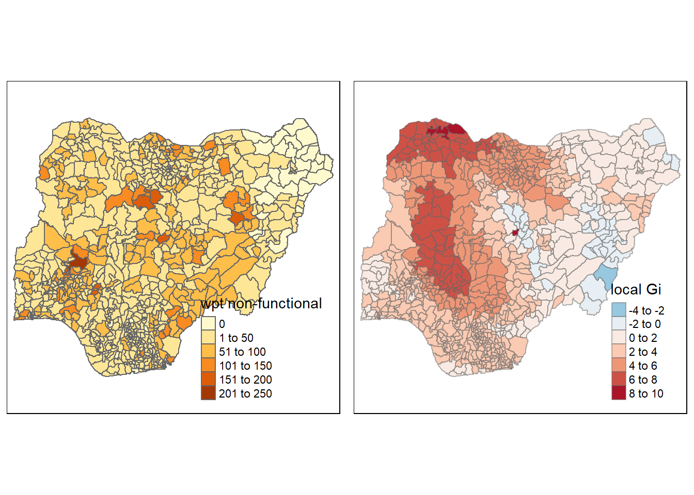
Gi statistics using adaptive distance
fips <- order(nga_wp$`wpt non-functional`)
gi.adaptive <- localG(nga_wp$'wpt non-functional', knn_lw)
hunan.gi <- cbind(nga_wp, as.matrix(gi.adaptive)) %>%
rename(gstat_adaptive = as.matrix.gi.adaptive.)Mapping Gi values with adaptive distance weights
nonfunc <- qtm(nga_wp, "wpt non-functional")
Gimap <- tm_shape(hunan.gi) +
tm_fill(col = "gstat_adaptive",
style = "pretty",
palette="-RdBu",
title = "local Gi") +
tm_borders(alpha = 0.5)
tmap_arrange(nonfunc,
Gimap,
asp=1,
ncol=2)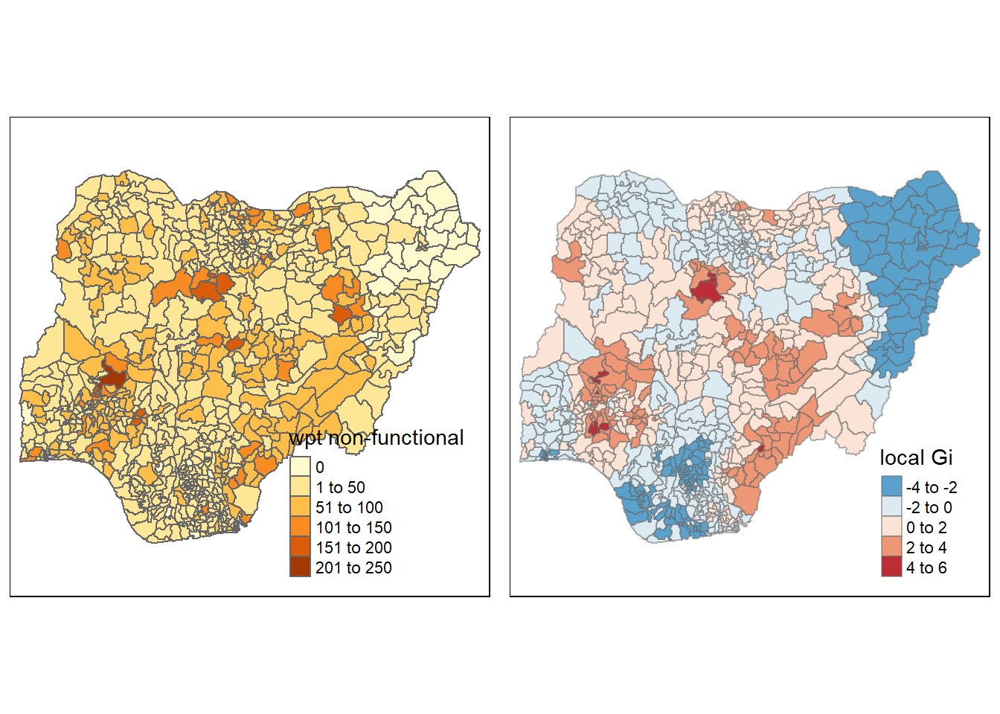